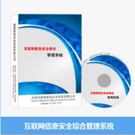

天津住总科技发展有限公司成立于2011年，注册资本3000万元，是一家及智慧用电、智能环保、智慧电工等产品的研发、生产、销售及服务为一体的高科技企业，也是天津安全管理协会副会长级单位。
现根据国务院安委办、国家安全监管总局、公安部消防总局针对电气火灾综合治理的指示精神，并就目前多发的电气火灾给人民的生命财产早就的巨大损失。
我们公司本着强烈的社会责任感与杭州家和物联公司共同推出了智慧式电气火灾监管服务系统它是把人力不可为的电气线路与用电设备存在的安全隐患采集经无线传送到后台大数据中心分析后实时把隐患原因发送到用户手机上
做到了把人力不可预测的隐患防患于未然，为人民的生命财产安全起到了保驾护航的作用，为各级政府的监管服务做到了心中有数的积极作用。